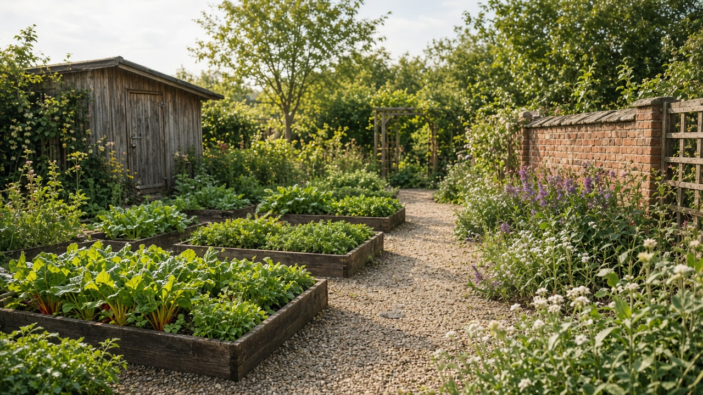

Über uns
Ein Hof für die Nachbarschaft.
Seit 2014 bewirtschaften wir eine frühere Brachfläche hinter der alten Gärtnerei. Der Verein hat keine Mitgliedsbeiträge über den jährlichen Sack Erde hinaus.

Was hier wächst
- Gemüsebeete, die jede Saison neu vergeben werden
- Eine Kräuterspirale an der Südwand
- Zwei Hochbeete, die auch im Sitzen erreichbar sind
Mitmachen
Neue Mitglieder stellen sich beim Samstagstreffen vor. Wer nur einmal helfen möchte, braucht keine Anmeldung.